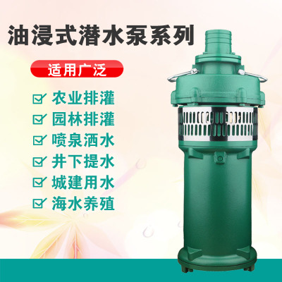
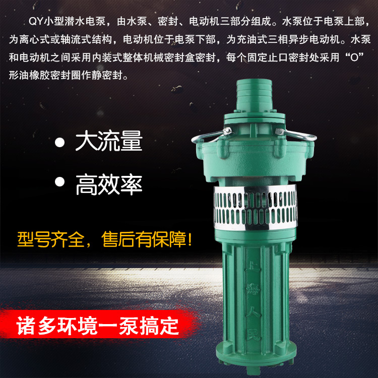

上海人民QY油浸潜水泵380V深井抽水工业农用灌溉油浸泵2.2-7.5KW
售价：3399元
品牌：人民
材质: 铸铁
驱动方式: 电动
供应商：江西南丰振宇集团
商品详情
上海人民380V潜水泵,全铜线电机保证！水泵包1年！广泛应用于农田灌溉、鱼塘引水等用途，流量大，寿命长。电机位于水泵下部，内充5-10号机械油，以利电机绕组散热、冷却和轴承润滑，使电泵能使用于电压波动较大的农村，而不导致电机因失压而烧坏。
